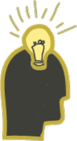

Om mig
Mit navn er Oscar Hansen, og jeg stammer fra Gråsten i det lille Sønderjylland. Jeg betragter mig selv som en social og imødekommende person med en stolt sønderjysk identitet, men udover lille Gråsten har jeg fået et fantastisk indtryk af Århus, hvor jeg har fået mange nye venner, og skal tilbringe mange år endnu!
Lige fra barndommen har jeg været fyldt med idéer og koncepter – (mine noter fylder mere end mine apps) Jeg har altid fundet nye kreative måder at udtrykke mine tanker på: fra LEGO til computerspil og YouTube-videoer, derefter malerier og nu i Adobe- og Figma-universet, som jeg elsker!
Mine kompentencer
Nysgerrig
Iderig

Samarbejdende